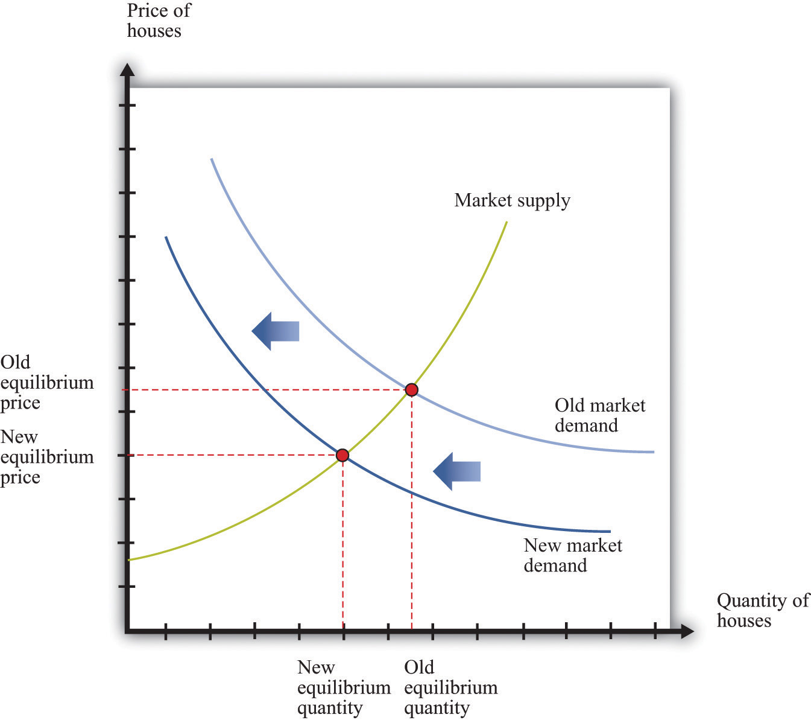
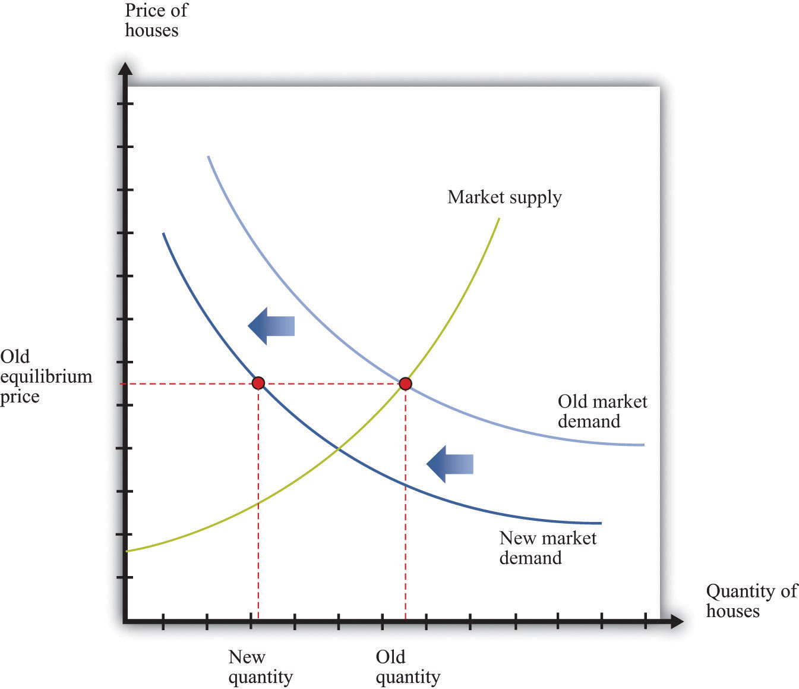
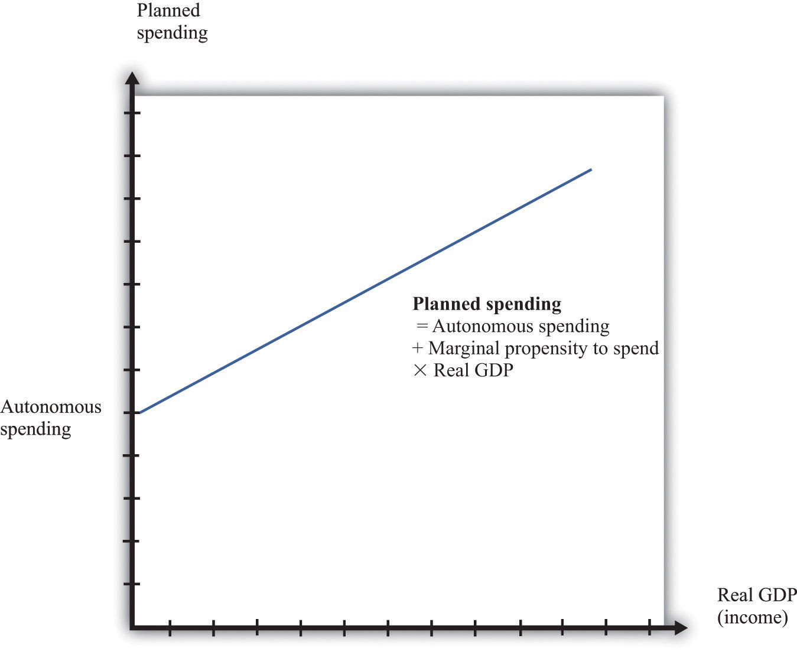
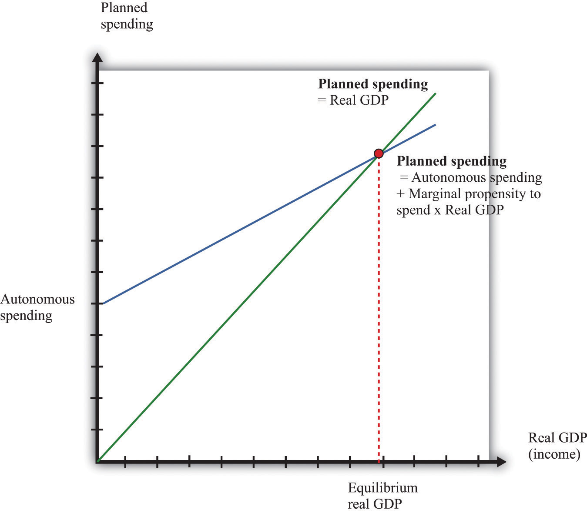
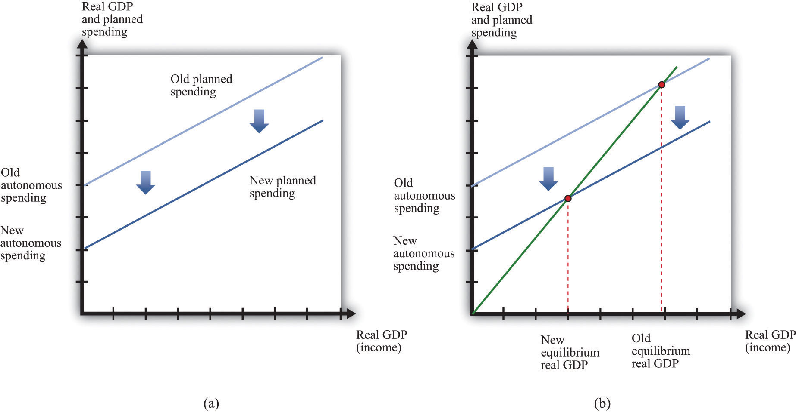
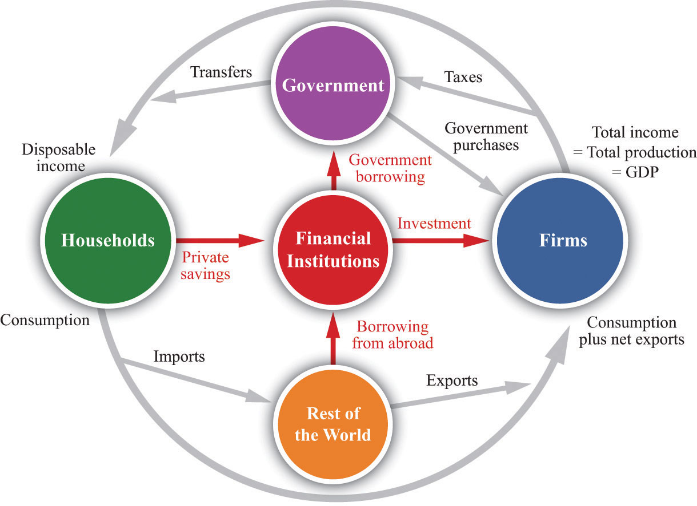
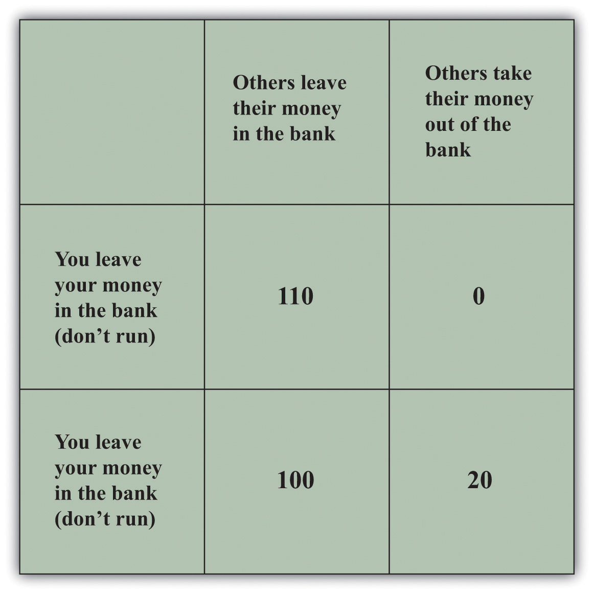
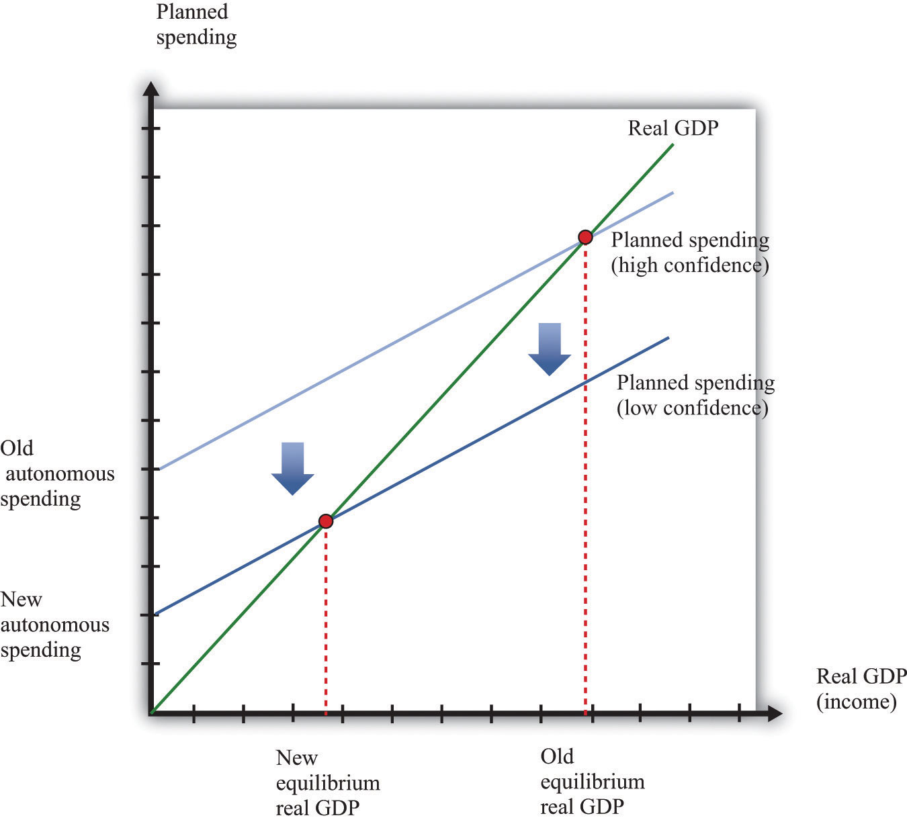
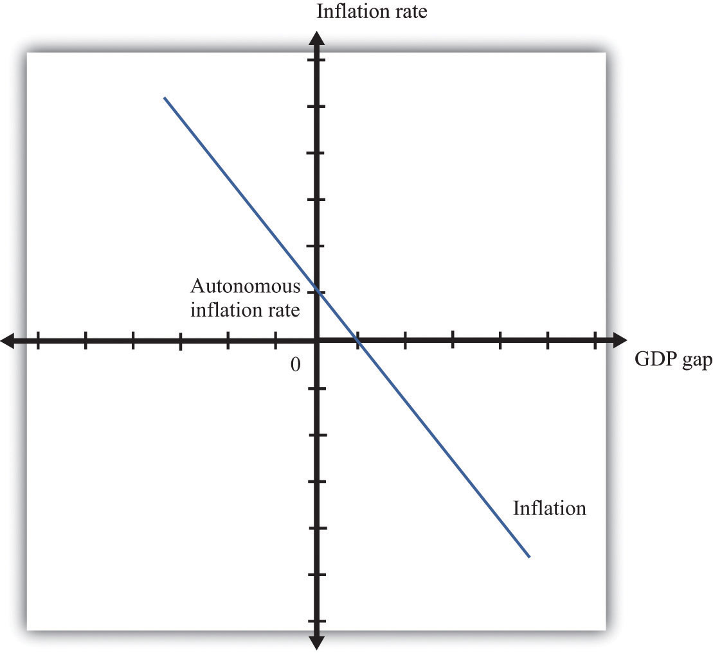

After you have read this section, you should be able to answer the following questions:
Now that we understand the components of aggregate spending, we can consider whether a decrease in one or more of these components can explain the Great Depression.
Consider, as before, the market for new houses and suppose there is a reduction in spending on houses. Market demand shifts inward, causing a decrease in the price of houses, as shown in Figure 22.6 "An Inward Shift in Market Demand for Houses". The lower price means that construction firms choose to build fewer houses; there is a movement along the supply curve.
Figure 22.6 An Inward Shift in Market Demand for Houses
A decrease in demand for houses leads to a decrease in the price of houses and a lower quantity of houses being produced and sold.
As before, the effects are not confined to the housing market. Construction firms demand less labor, so the wages of these workers decrease. Employment in the construction industry declines, but these workers now seek jobs in other sectors of the economy. The increased supply of labor in these sectors reduces wages and thus makes it more attractive for firms to increase their hiring. Supply curves in other sectors shift rightward. Moreover, the income that was being spent on housing will instead be spent somewhere else in the economy, so we expect to see rightward shifts in demand curves in other sectors as well. In summary, if we are looking at the whole economy, a decrease in spending in one market is not that different from a decrease in technology in one market: we expect a reduction in one sector to lead to expansions in other sectors. The economy still appears to be self-stabilizing.
In this story, as is usual when we use supply and demand, we presumed that prices and wages adjust quickly to bring supply and demand into line. This is critical for the effective functioning of markets: for markets to do a good job of matching up demand and supply, wages and prices must respond rapidly to differences between supply and demand. Flexible pricesPrices that adjust immediately to shifts in supply and demand curves so that markets are always in equilibrium. adjust immediately to shifts in supply and demand curves so that price is always at the point where supply equals demand. If, for example, the quantity of labor supplied exceeds the quantity of labor demanded, flexible wages decrease quickly to bring the labor market back into equilibrium.
Suppose we instead entertain the possibility that wages and prices do not immediately adjust. Sticky pricesPrices that do not adjust immediately to shifts in supply and demand curves so that markets are not always in equilibrium. do not react immediately to shifts in supply and demand curves, and the adjustment to equilibrium can take some time. We defer for the moment the discussion of why prices might be sticky and concentrate instead on the implications of this new idea about how markets work. The easiest way to see the effects of price stickiness is to suppose that prices do not change at all. Figure 22.7 "A Shift in Demand for Houses When Prices Are Sticky" shows the impact of a decrease in demand for houses when the price of houses is completely sticky. If you compare Figure 22.7 "A Shift in Demand for Houses When Prices Are Sticky" to Figure 22.6 "An Inward Shift in Market Demand for Houses", you see that a given shift in demand leads to a larger change in the quantity produced.
Figure 22.7 A Shift in Demand for Houses When Prices Are Sticky
If the price in the market is “sticky,” it may not adjust immediately to the change in demand, resulting in a large decrease in the quantity of houses that are produced and sold.
What about the effects on other markets? As before, a decrease in demand for housing will cause construction workers to lose their jobs. If wages are sticky, these workers may become unemployed for a significant period of time. Their income decreases, and they consume fewer goods and services. So, for example, the demand for beef in the economy might decrease because unemployed construction workers buy cheaper meat. This means that the demand for beef shifts inward. The reduction in activity in the construction sector leads to a reduction in activity in the beef sector. And the process does not stop there—the reduced income of cattle farmers and slaughterhouse workers will, in turn, spill over to other sectors.
What has happened to the self-stabilizing economy described earlier? First, sticky wages and prices impede the incentives for workers to flow from one sector to another. If wages are sticky, then the reduction in labor demand in the construction sector does not translate into lower wages. Thus there is no incentive for other sectors to expand. Instead, these other sectors, such as food, see a decrease in demand for their product, which leads them to contract as well. Second, the decrease in income means that it is possible to see decreases in demand across the entire economy. It no longer need be the case that reductions in spending in one area lead to increased spending in other sectors.
So far, we have told this story in terms of individual markets. The circular flow helps us see how these markets come together in the aggregate economy. When we looked at the markets for housing and beef, we saw that a decrease in demand for housing led to a decrease in demand for labor and, hence, to lower labor income. We also saw that as income earned in the housing market decreased, spending decreased in the beef market. Such linkages are at the heart of the circular flow of income. Household spending on goods and services is made possible by a flow of income from firms. Firms’ hiring of labor is made possible by a flow of revenue from households. Keynes argued that this was a delicate process that might be prone to malfunction in a variety of ways.
Households are willing to buy goods and services if they have a reasonable expectation that they can earn income by selling labor. During the Great Depression, however, household expectations were surely quite pessimistic. Individuals without jobs believed that their chances of finding new employment were low. Those lucky enough to be employed knew that they might soon be out of work. Thus households believed it was possible, even likely, that they would receive low levels of income in the future. In response, they cut back their spending.
Meanwhile, the willingness of firms to hire labor depends on their expectation that they can sell the goods they manufacture. When firms anticipate a low level of demand for their products, they do not want to produce much, so they do not need many workers. Current employees are laid off, and there are few new hires.
Through the circular flow, the pessimism of households and the pessimism of firms interact. Firms do not hire workers, so household income is low, and households are right not to spend much. Households do not spend, so demand for goods and services is low, and firms are right not to hire many workers. The pessimistic beliefs of firms and workers become self-fulfilling prophecies.
In the remainder of this section, we build a framework around the ideas that we have just put forward. The framework focuses on the determinants of aggregate spending because, in this approach, the output of the economy is determined not by the level of potential output but by the level of total spending. This model is based around the idea of sticky prices—or, more precisely, it tells us what the output of the economy will be, at a given value of the overall price level. Once we understand this, we can add in the effects of changing prices.
Earlier, we introduced the national income identity:
production = consumption + investment + government purchases + net exports.This equation must be true by the way the national income accounts are constructed. That is, it is an accounting identity. We also explained that
GDP = planned spending + unplanned inventory investment.It is possible for firms to accumulate or decumulate inventories unintentionally, but such a situation will not persist for long. Firms quickly respond to such imbalances by adjusting their production. The aggregate expenditure model takes the national income identity and adds to it the condition that unplanned inventory investment equals zero—equivalently, gross domestic product (GDP) equals planned spending:
planned spending = consumption + investment + government purchases + net exports.Another way of saying this is that as long as we interpret investment to include only planned investment, the national income equation is no longer an identity but instead a condition for equilibrium.
We could now examine all four components of planned spending separately.Different chapters of this book delve deeper into these types of spending. For the moment, however, we group them all together. We focus on the fact that total planned spending depends positively on the level of income and output in an economy, for two main reasons:
Figure 22.8 The Planned Spending Line
Planned spending is composed of autonomous spending (the amount of spending when real GDP equals zero) and induced spending (spending resulting from real GDP).
In summary, we conclude that when income increases, planned expenditure also increases. We illustrate this in Figure 22.8 "The Planned Spending Line", where we suppose for simplicity that the relationship between planned spending and GDP is a straight line:
planned spending = autonomous spending + marginal propensity to spend × GDP.Autonomous spendingThe amount of spending that there would be in an economy if income were zero. is the intercept of the planned spending line. It is the amount of spending that there would be in an economy if income were zero. It is positive, for two reasons: (1) A household with no income still wants to consume something, so it will either draw on its existing savings or borrow against future income. (2) The government purchases goods and services even if income is zero.
The marginal propensity to spendThe slope of the planned spending line, measuring the change in planned spending if income increases by $1. is the slope of the planned spending line. It tells us how much planned spending increases if there is a $1 increase in income. The marginal propensity to spend is positive: Increases in income lead to increased spending by households and firms. The marginal propensity to spend is less than one, largely because of consumption smoothing by households. If household income increases by $1, households typically consume only a fraction of the increase, saving the remainder to finance future consumption. This equation, together with the condition that GDP equals planned spending, gives us the aggregate expenditure modelThe framework that links planned spending and output..
Toolkit: Section 31.30 "The Aggregate Expenditure Model"
The aggregate expenditure model takes as its starting point the fact that GDP measures both total spending and total production. The model focuses on the relationships between output and spending, which we write as follows:
planned spending = GDP and planned spending = autonomous spending + marginal propensity to spend × GDP.The model finds the value of output for a given value of the price level. It is then combined with a model of price adjustment to give a complete picture of the economy.
Figure 22.9 Equilibrium in the Aggregate Expenditure Model
The aggregate expenditure framework tells us that the economy is in equilibrium when planned spending equals real GDP.
We can solve the two equations to find the values of GDP and planned spending that are consistent with both equations:
We can also take a graphical approach, as shown in Figure 22.9 "Equilibrium in the Aggregate Expenditure Model". On the horizontal axis is the level of real GDP, while on the vertical axis is the overall level of (planned) spending in the economy. We graph the two relationships of the aggregate expenditure model. The first line is a 45° line—that is, it is a line with a slope equal to one and passing through the origin. The second is the planned spending line. The point that solves the two equations is the point where the two lines intersect. This diagram is the essence of the aggregate expenditure model of the macroeconomy.
The aggregate expenditure model makes no reference to potential output or the supply side of the economy. The model assumes that the total amount of output produced will always equal the quantity demanded at the given price. You might think that this neglect of the supply side is a weakness of the model, and you would be right. In Section 22.4.6 "Price Adjustment", when we introduce the adjustment of prices, the significance of potential output becomes clear.
We now apply this framework to the Great Depression. The aggregate expenditure approach suggests that output decreased in the Great Depression because aggregate spending decreased. Part (a) of Figure 22.10 "A Decrease in Aggregate Expenditures" shows how this process begins: a decrease in autonomous spending shifts the spending line down. The interpretation of such a shift is that, at every level of income, spending is lower. Such a decrease in spending is due to a decrease in (the autonomous component of) consumption, investment, government spending, or net exports (or some combination of these). Part (b) of Figure 22.10 "A Decrease in Aggregate Expenditures" shows what happens when the planned spending line shifts downward. The equilibrium level of real GDP decreases. So far, therefore, the aggregate expenditure model seems to work: a decrease in autonomous spending leads to a decrease in real GDP at the given price level. But we need to know why planned spending decreased.
Figure 22.10 A Decrease in Aggregate Expenditures
The Keynesian explanation of the Great Depression is that a decrease in autonomous spending caused the planned spending line to shift downward (a) leading to a decrease in the equilibrium level of real GDP (b).
Let us first consider the possibility that a reduction in consumption triggered the Great Depression. Recall that, between September and November 1929, the stock market in the United States crashed. This collapse meant that many households were suddenly less wealthy than they had been previously. A natural response to a decrease in wealth is to decrease consumption; this is known as a wealth effectThe effect on consumption of a change in wealth..
Wealth is distinct from income. Income is a flow: a household’s income is the amount that it receives over a period of time, such as a year. Wealth is a stock: it is the cumulated amount of the household’s savings. Is it plausible that wealth effects could explain a collapse of the magnitude of the Great Depression? To answer this, we need to determine how much real GDP decreases for a given change in autonomous spending.
Toolkit: Section 31.30 "The Aggregate Expenditure Model"
The solution for output in the aggregate expenditure model can be written in terms of changes as follows:
change in GDP = multiplier × change in autonomous spending,where the multiplierThe amount by which a change in autonomous spending must be multiplied to give the change in output, equal to 1 divided by (1 – the marginal propensity to spend). is given by
Suppose that the marginal propensity to spend is 0.8. Then
A given change in autonomous spending will lead to a fivefold change in real GDP. Economists refer to this as a multiplier process. Because (1 − marginal propensity to spend) is less than one, the multiplier is a number greater than one. This means that any change in autonomous spending is multiplied up to result in a larger change in GDP. Even relatively small decreases in spending can end up being damaging to an economy.
The economics behind the multiplier comes from the circular flow of income. Begin with a decrease in autonomous spending. The reduction in spending means less demand for firms’ goods and services. Firms respond by cutting output. (As a reminder, the signal to firms that they should cut their output comes from the fact that they see a buildup of their inventory.) When firms cut their output, they require less labor and pay out less in wages, so household income decreases. This causes households to again cut back on consumption, so spending decreases further. Thus we go round and round the circular flow diagram: decreased spending leads to decreased output, which leads to decreased income, which leads to decreased spending, which leads to decreased output, and so on and so on. The process continues until the reductions in income, output, and consumption in each round are tiny enough to be ignored.
We use the multiplier to carry out comparative static exercises in the aggregate expenditure model. In this case, the endogenous variable is real GDP, and the exogenous variable is autonomous spending. Given a change in autonomous spending, we simply multiply by the multiplier to get the change in real GDP when the price level is fixed. Let us do some back-of-the-envelope comparative static calculations, based on the assumption that the marginal propensity to spend is 0.8, so the multiplier is 5.
Table 22.1 "Major Macroeconomic Variables, 1920–39*" tells us that real GDP decreased by approximately $75 billion between 1929 and 1930. With a multiplier of 5, we would need a drop in autonomous spending of $75 billion divided by 5, or $15 billion, to get this large a decrease in GDP. The population of the United States in 1930 was approximately 123 million, so a $15 billion decrease in spending corresponds to about $122 per person. Remember that the figures in Table 22.1 "Major Macroeconomic Variables, 1920–39*" are in terms of year 2000 dollars. It certainly seems plausible that households, who had been made significantly poorer by the collapse in the stock market, would have responded by cutting back spending by the equivalent today of a few hundred dollars per year.
Our goal, you will remember, is to explain the events of the Great Depression. How are we doing so far? The good news is that we do have a story that explains how output could decrease as precipitously as it did in the Great Depression years: there was a major stock market crash, which made people feel less wealthy, so they decided to consume less and save more.
If we look more closely, though, this story still falls short. When we examined the data for the Great Depression, we saw that—while output and consumption both decreased—consumption decreased much less than did output. For example, from 1929 to 1933, real GDP decreased by 26.5 percent, while consumption decreased by 18.2 percent. By contrast, investment (that is, purchases of capital by firms, new home construction, and changes in business inventories) decreased much more than output. In 1932, purchases of new capital were $11 billion (year 2000 dollars), compared to a level of $91 billion in 1929. This is a reduction in real investment of about 82 percent. We must look more closely at investment to see if our theory can also explain the different behavior of consumption and investment.
When GDP decreases, there can be an induced decrease in investment: declines in income lead firms to anticipate lower production in the future, meaning they see less of a need to build up their capital stock. But the changes in investment during the Great Depression were very large. Because it is implausible that such large variation was the result of changes in output alone, economists look for additional explanations of why investment decreased so much during the Great Depression.
During the Great Depression, the link between savings and investment was disrupted by bank failures. Between 1929 and 1933, a number of US banks went out of business, often taking the savings of households with them. People began to trust banks less, and many households stopped putting their savings into the financial sector. The financial sector is an intermediary between households and firms, matching up the supply of savings from households with the demand for savings by firms. Figure 22.11 "The Financial Sector in the Circular Flow of Income" shows the flows in and out of the financial sector. (Our focus here is on the role of this sector in matching savers and investors. As Figure 22.11 "The Financial Sector in the Circular Flow of Income" shows, however, funds also flow into (or from) the financial sector from the rest of the world and the government sector.)
Figure 22.11 The Financial Sector in the Circular Flow of Income
Financial institutions such as banks act as intermediaries in the circular flow of income. During the Great Depression, many banks failed, disrupting the matching of savings and investment.
To understand bank failures in the Great Depression, we need to take a moment to review what banks do. A bank is an institution that accepts money (“bank deposits”) from individuals. It then takes some of that money and puts it into longer-term projects—the construction of an apartment building, for example. The bank in this case issues a long-term loan to the company that plans to construct the new building.
At any time, a bank has a portfolio of assets. Some are liquidCapable of being easily and quickly exchanged for cash.; they are easily and quickly exchanged for cash. Some are illiquidNot capable of being easily and quickly exchanged for cash.; they cannot easily be converted into cash. Banks keep some assets in a highly liquid form, such as cash or very short-term loans, and also hold assets that are relatively illiquid, such as a two-year loan to a construction company.
At any time, depositors at a bank can choose to withdraw their money. Under normal circumstances, people are happy to leave most of their money in the bank, so only a small fraction of depositors want to withdraw money on any given day. The bank keeps some cash in its vaults to accommodate this demand. But suppose that times are not normal. Suppose that, as was the case during the Great Depression, depositors start to see that other banks are going out of business. Then they may worry that their own bank is also at risk of failing, in which case they will lose their savings. The natural response is to rush to the bank to withdraw money before the bank fails.
If a large number of depositors all try to withdraw money at once, the bank will run out of cash and other liquid assets. It will not be able to meet the needs of its depositors. The consequence is a bank runA significant fraction of a bank’s depositors all trying to withdraw funds at the same time.. And if the bank is unable to meet its depositors’ demands, it may be forced out of business altogether. This is known as a bank failureWhen a bank closes because it is unable to meet its depositors’ demands..
A striking feature of a bank failure caused by a bank run is that it is a self-fulfilling prophecy:
Notice that every individual’s decision about what to do is based on what that individual expects everyone else will do.
Figure 22.12 "Payoffs in a Bank-Run Game" presents the decisions underlying a bank run in a stylized way. Imagine that you deposit $100 in the bank. The table in the figure shows how much you obtain, depending on your own actions and those of other depositors. You and the other depositors must decide whether to leave your money in the bank (“don’t run”) or try to take your money out of the bank (“run”). If everyone else leaves money in the bank, then you can withdraw your money and get $100 or leave it in the bank and get the $100 plus $10 interest. If others do not run, then it is also best for you not to run. But if everyone else runs on the bank, then you get nothing if you leave your money in the bank, and you can (in this example) recover $20 if you run to the bank along with everyone else. Thus, if you expect others to run on the bank, you should do the same.
Figure 22.12 Payoffs in a Bank-Run Game
This table shows the payoffs in a bank-run game. That is, it shows you what you get back depending on your choice and everybody else’s choice about whether to run on the bank. If everyone else leaves money in the bank, then you should do the same, but if everyone else runs on the bank, you are better running as well.
Economists call this situation a coordination gameA strategic situation in which there are multiple equilibria.. In a coordination game, there are multiple equilibria. In this example, there is one equilibrium where there is no run on the bank, and there is another equilibrium where everyone runs to the bank to withdraw funds.
Toolkit: Section 31.18 "Nash Equilibrium"
You can find more details on coordination games in the toolkit.
During the Great Depression, a story such as this played out not only at one bank but at many. Figure 22.13 shows what happened in terms of the aggregate expenditure framework. Prior to the Great Depression, the economy was in a “high confidence” equilibrium, in which the banking system was healthy and confidence was high. Then—for some reason—people became nervous about leaving money in banks, and it became much harder for firms to obtain loans. The cost of borrowing—the real interest rateThe rate of return specified in terms of goods, not money.—increased, and investment decreased substantially. The planned spending line shifted downward, and the economy moved to the bad “low confidence” equilibrium. The downward shift in planned spending leads to a decrease in real GDP, given the existing level of prices.
Figure 22.13 should look familiar; it is the same as part (b) of Figure 22.10 "A Decrease in Aggregate Expenditures". This is because a decrease in autonomous consumption and a decrease in autonomous investment both look the same in the aggregate expenditure model, even though the underlying story is different. Of course, it is also possible that both autonomous consumption and autonomous investment decreased.
Figure 22.13
Failures in the financial sector lead to a drop in investment spending. During the Great Depression, a decrease in confidence in the banking system meant that many banks failed, and it became more difficult and expensive for firms to borrow. The planned spending line shifted downward, and real GDP decreased.
To summarize, the banking crisis made households reluctant to put money in the banks, and banks were reluctant to make loans. Two banking measures help us see what was happening. The currency-deposit ratioThe total amount of currency (banknotes plus coins) divided by the total amount of deposits in banks. is the total amount of currency (that is, either banknotes or coins) divided by the total amount of deposits in banks. The loan-deposit ratioThe total amount of loans made by banks divided by the total amount of deposits in banks. is the total amount of loans made by banks divided by the total amount of deposits in banks.
If the currency-deposit ratio is low, households are not holding very much cash but are instead keeping wealth in the form of bank deposits and other assets. The currency-deposit ratio increased from 0.09 in October 1929 to 0.23 in March 1933.See Milton Friedman and Anna Schwartz, A Monetary History of the United States, 1867–1960 (Princeton, NJ: Princeton University Press, 1963), Table B3. This means that households in the economy started holding onto cash rather than depositing it in banks. You can think of the loan-deposit ratio as a measure of the productivity of banks: banks take deposits and convert them into loans for investment. During the Great Depression, the loan-deposit ratio decreased from 0.86 to 0.73.See Ben Bernanke, “Nonmonetary Effects of the Financial Crisis in the Propagation of the Great Depression,” American Economic Review 73 (1983): 257–76, Table 1.
The story we have told explains why the economy departs from potential output but says nothing about how (if at all) the economy gets back to potential output. The answer is that prices have a tendency to adjust back toward their equilibrium levels, even if they do not always get there immediately. This is most easily understood by remembering that prices in the economy are, in the end, usually set by firms. When a firm sees a decrease in demand for its product, it does not necessarily decrease its prices immediately. Its decision about what price to choose depends on the prices of its inputs and the prices being set by its competitors. In addition, it depends on not only what those prices are right now but also what the firm expects to happen in the future. Deciding exactly what to do about prices can be a difficult decision for the managers of a firm.
Without analyzing this decision in detail, we can certainly observe that firms often keep prices fixed when demand decreases—at least to begin with. The result looks like that in Figure 22.6 "An Inward Shift in Market Demand for Houses". In the face of a prolonged decrease in demand, however, firms will lower prices. Some firms do this relatively quickly; others keep prices unchanged for longer periods. We conclude that prices are sticky; they do not decrease instantly, but they decrease eventually.Chapter 25 "Understanding the Fed" provides more detail about the price-adjustment decisions of firms. For the economy as a whole, this adjustment of prices is represented by a price-adjustment equationAn equation that describes how prices adjust in response to the output gap, given autonomous inflation..
Toolkit: Section 31.31 "Price Adjustment"
The difference between potential output and actual output is called the output gapThe difference between potential output and actual output.:
output gap = potential real GDP − actual real GDP.If an economy is in recession, the output gap is positive. If an economy is in a boom, then the output gap is negative. The inflation rate when an economy is at potential output (that is, when the output gap is zero) is called autonomous inflationThe level of inflation when the output gap is zero.. The overall inflation rate depends on both autonomous inflation and the output gap, as shown in the price-adjustment equation:
inflation rate = autonomous inflation − inflation sensitivity × output gap.This equation tells us that there are two reasons for increasing prices.
When real GDP is above potential output, there is upward pressure on prices in the economy. The inflation rate exceeds autonomous inflation. By contrast, when real GDP is below potential, there is downward pressure on prices. The inflation rate is below the autonomous inflation rate. The price-adjustment equation is shown in Figure 22.14 "Price Adjustment".
Figure 22.14 Price Adjustment
When an economy is in a recession, actual inflation is lower than autonomous inflation. In a boom, inflation is higher than its autonomous level.
We can apply this pricing equation to the Great Depression. Imagine first that autonomous inflation is zero. In this case, prices decrease when output is below potential. From 1929 to 1933, output was surely below potential and, as the equation suggests, this was a period of decreasing prices. After 1933, as the economy rebounded, the increase in the level of economic activity was matched with positive inflation—that is, increasing prices. This turnaround in inflation occurred even though the economy was still operating at a level below potential output. To match this movement in prices, we need to assume that—for some reason that we have not explained—autonomous inflation became positive in this period.